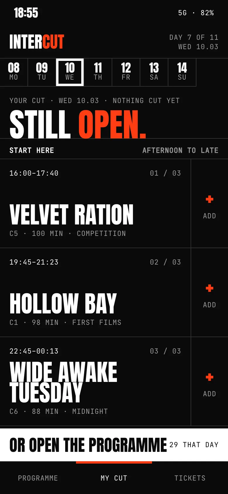
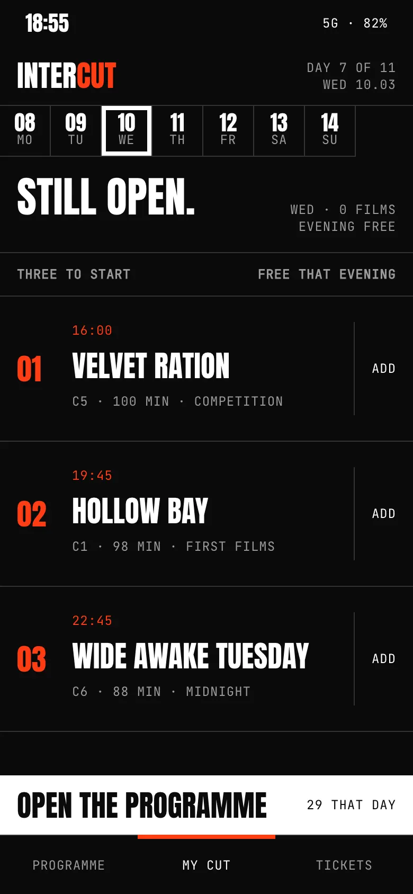
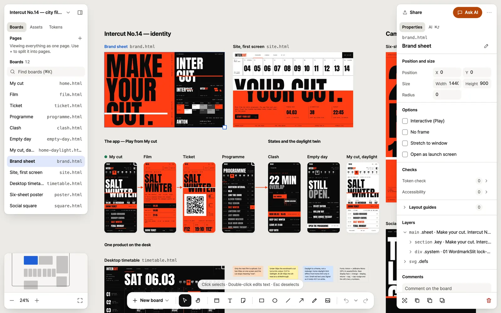
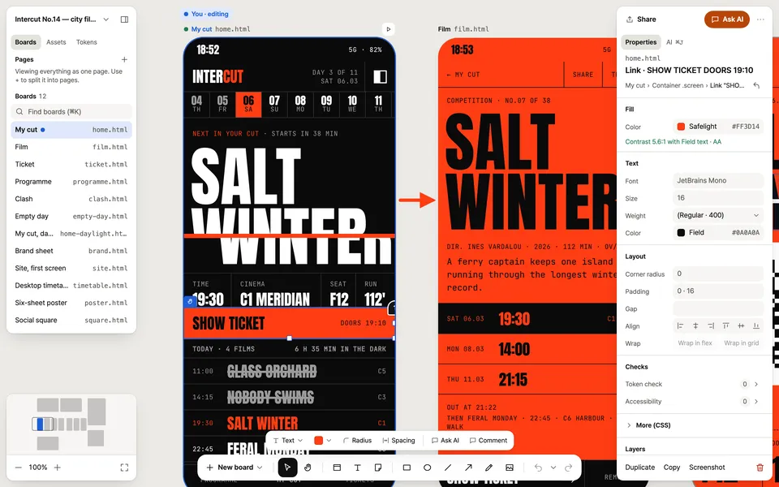
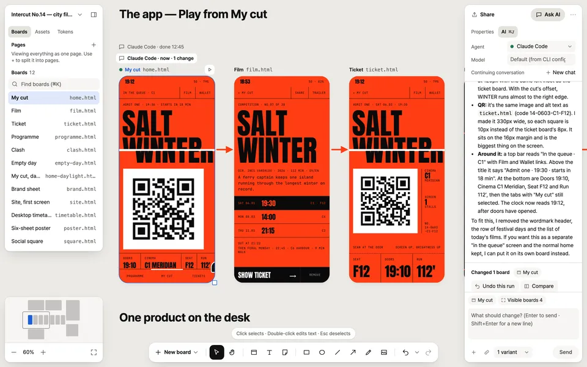
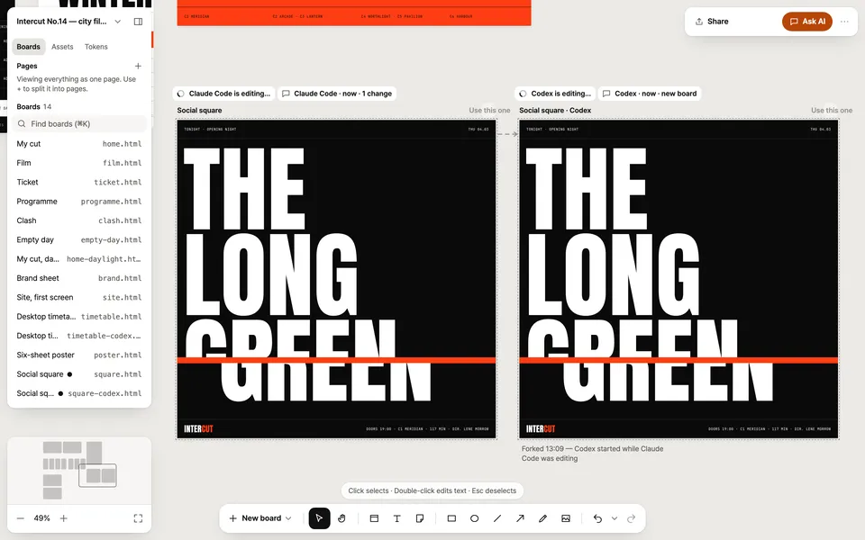

Ask Claude Code, Codex and Cursor for the same screen. Keep the best one.
Easel is a design canvas that opens beside the AI app you already use. Every agent you connect draws on it, in real HTML in your repo.
npx easel-canvas@latest --demoTry the demo on your computer first. Install into your agent ↓
Redesign the “Empty day” phone board so that an empty Wednesday feels like an invitation … make the three suggested films the main thing on the screen.



A real run on 19 Nov 2026: one prompt, sent at the same second to the Claude Code, Codex and Cursor command-line tools, all on one canvas. These are the files they wrote. How it happened ↓
How it happened
Same prompt, same second, one canvas.
Claude Code got the board first. Codex and Cursor asked for it while it was busy, so Easel gave each a fork beside it instead of letting them overwrite it. Every mark below is a real tool call.
Redesign the “Empty day” phone board so that an empty Wednesday feels like an invitation … make the three suggested films the main thing on the screen.
“Shrank "STILL OPEN." to one 56px line (with "open." in safelight) so the three films become tall 152px cards with 40px titles, a start–end time and a full-height safelight "+ Add" column, and the programme bar now reads as the fallback ("Or open the programme").”
“I made the three suggested films the focus with large tappable cards, kept the Intercut wordmark and Night tokens, and framed Wednesday as still open.”
“Shrunk STILL OPEN. into a compact invite strip so the numbered film picks (01–03) own the screen as the way into an empty Wednesday.”
0 – 163 s · thick mark: write_board · thin: other tool calls · faint: Codex’s calls with no logged time, in order
Run through each agent’s command-line tool on Easel 0.2.1, not the desktop apps. The full prompt · the tool-call log
It opens beside the app you already use.
No new app to learn. The canvas is a local page; your agent reaches it through Easel’s MCP server.

Claude desktop app
In the Code tab, ask Claude to open the design canvas. It opens in the app’s Browser pane, next to the conversation.
- Install the plugin for Claude Code.
- Say “open the design canvas”, or run
/easel:open.
claude plugin marketplace add nemodleo/easel --sparse .claude-plugin plugin && claude plugin install easel@easelCodex app
The plugin gives Codex Easel’s tools and skill. Keep the canvas open beside the Codex app and ask for a screen.
- Install the plugin for Codex.
- Ask for a screen. It lands on the canvas as an HTML file.
claim_board empty-day.html → empty-day-codex.html · fork write_board empty-day-codex.html ×2
codex plugin marketplace add nemodleo/easel --sparse .agents/plugins --sparse plugin && codex plugin add easel@easelCursor
The skill teaches Cursor’s agent the canvas; connect adds the tools. Keep the canvas in a tab beside it.
- Add the skill with the first line below.
- Run the second in your project to add the tools.
claim_board empty-day.html → empty-day-cursor.html · fork write_board empty-day-cursor.html ×2
npx skills add nemodleo/easel --skill easel -a cursornpx easel-canvas connectInstall it into your agent.
One line each. Then, in your project, ask for what you want: “open the design canvas”, “make three variants of the sign-up screen”.
MCP tools, the easel skill, /easel:open and /easel:variants
claude plugin marketplace add nemodleo/easel --sparse .claude-plugin plugin && claude plugin install easel@easelMCP tools and the easel skill
codex plugin marketplace add nemodleo/easel --sparse .agents/plugins --sparse plugin && codex plugin add easel@easelThe easel skill; add the tools with npx easel-canvas connect
npx skills add nemodleo/easel --skill easel -a cursorThe bundled demo, 12 boards
npx easel-canvas@latest --demoGemini CLI and any other MCP client: connect your AI agent in the README.
It is your canvas too.
The agents write the boards. You can change any of them by hand, and nothing anyone does is lost.



Show it to anyone.
Share writes a view-only copy of the canvas that any static host can serve, or one .html file to attach to a PR. Add ?embed to put it inside your own page.
$ npx easel-canvas export <!-- in your docs or PR preview --> <iframe src="easel-export/index.html?embed" title="Design canvas"></iframe>
Share a view-only copy: every option in the README.
Claude Code · its own comment on the board
“Shrank "STILL OPEN." to one 56px line (with "open." in safelight) so the three films become tall 152px cards with 40px titles, a start–end time and a full-height safelight "+ Add" column, and the programme bar now reads as the fallback ("Or open the programme").”
Codex · its own comment on the board
“I made the three suggested films the focus with large tappable cards, kept the Intercut wordmark and Night tokens, and framed Wednesday as still open.”
Cursor · its own comment on the board
“Shrunk STILL OPEN. into a compact invite strip so the numbered film picks (01–03) own the screen as the way into an empty Wednesday.”